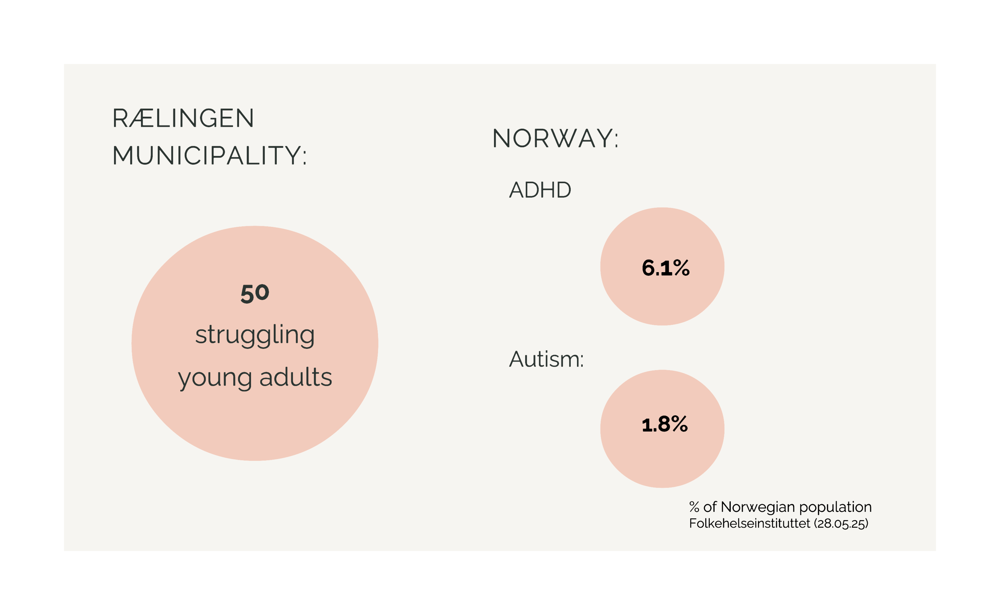
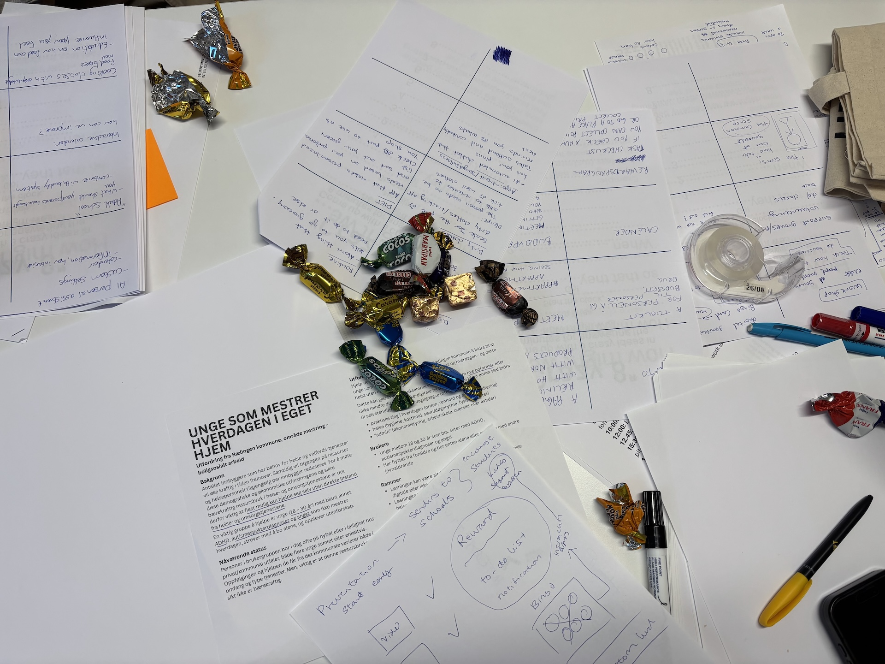
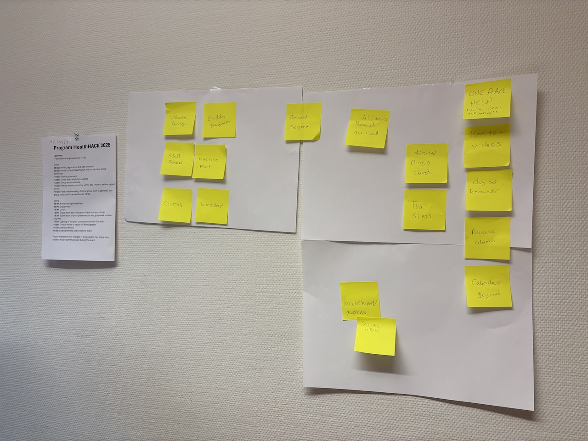
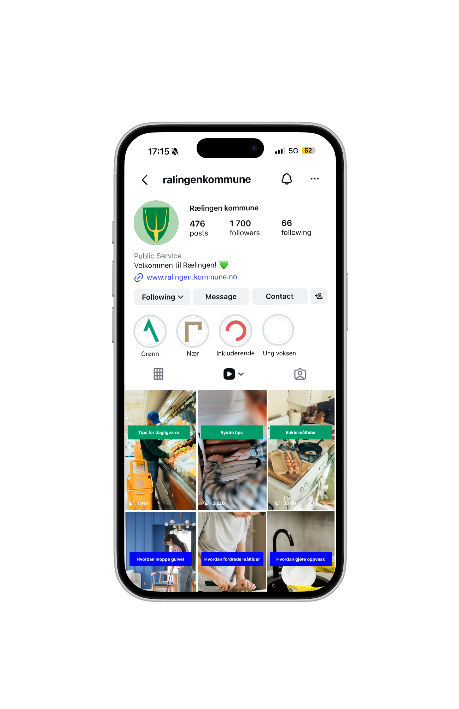

HealthHACK 2026
Ready for Life – a guide for the household
A concept for supporting neurodivergent young adults transitioning to independent living
UX Design | Accessibility | Service Design | HealthHACK 2026

(1 Interactiondesign student, 2 Product students
and 1 Computer science student)
THE PROJECT
HealthHACK is OsloMet's annual hackathon where students from different disciplines come together to solve real health challenges. Our brief came from Rælingen municipality.
As demand for municipal health and care services grows and available resources are shrinking. The goal is for as many people as possible to manage independently without relying on direct support from the municipality.
One group that often falls through the cracks are young adults. Many of them struggle to manage everyday life and finds it difficult to live alone and experience social exclusion.
Our target group with traits:
Young adults aged 18-30
ADHD
Autism spectrum diagnoses
Anxiety
RESEARCH
We started by speaking directly with a representative from Rælingen municipality to understand the problem space and the people affected. This gave us insight into the gap between what the municipality can provide and what these young adults actually need day-to-day.
Rælingen municipality estimates around 50 young adults in the municipality alone are in a similar situation.

PROCESS
The brief and conversation with the Ræling municipality, we developed a persona: Tom, a 19-year-old with ADHD moving out for the first time. Tom has never lived alone, lacks organisational skills and has no family support. Over time, laundry piles up, groceries rot in the fridge and his mental health begins to decline.

This lead us to explore: how might we reduce the number of young adults dependent on municipal support? There was no predefined problem or solution as we had to narrow it down ourselves.
Through Tom, we explored the reasons why young adults move out, what conditions make them vulnerable, who is most at risk of falling through the cracks and what happens when they do.
One thing became clear is how we take care of our home often reflect an underlying indicator of how someone is doing mentally and socially. Most learn these skills from family and closed ones, but not everyone has access to that kind of support.
This is where we saw the opportunity. And it led us to our core problem statement:
How can we support neurodivergent young adults in building habits around essential household tasks?


THE SOLUTION
“Klar for livet” builds on existing platforms already used by Rælingen kommune, offering cognitively friendly, accessible videos and tools for daily household tasks such as groceries, cleaning and saving money. The concept includes planned features such as personalised reminders and a Welcome to Young-Adult Life package with QR codes linking to instructional videos.


The concept is available to explore in Figma:
View concept in Figma →OUTCOME
Ready for Life was pitched to a panel of judges at HealthHACK 2026, competing against teams from across OsloMet. Our concept was well received and awarded bronze in the pitch competition. The judges responded positively to our focus on existing platforms and the cognitively friendly approach building on what Rælingen kommune already has rather than proposing an expensive new system from scratch. Following the competition, we were approached by Rælingen kommune and invited to present the concept directly to the municipality."
REFLECTION
HealthHACK 2026 was my third hackathon, and the first one where I won. From earlier contests, I learned how important storytelling is and backing it up with ideas up with research, clear reasoning and a human-centred perspective. Working within a 24-hour timeframe pushed me to make decisions fast and trust my own process as well take charge when the team is stuck up. As the sole interaction designer on the team, I took on a broad range of responsibilities: redesigning the UI for Rælingen kommune's website and Instagram prototype, editing the reel video, building the PowerPoint presentation and delivering the pitch. The most valuable lesson was learning how to narrow an open brief quickly and purposefully. We started with a broad societal challenge and had to define the problem ourselves which is often harder than solving one you're handed. If we had more time, I would have loved to speak directly with neurodivergent young adults, conduct more interviews with counsellors, and run proper user testing to validate the concept before pitching it.